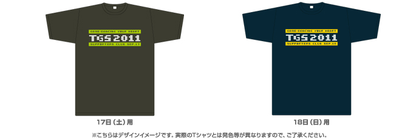

一般公開日入場料金のご案内
| 一般 | （中学生以上）当日券1,200円(税込)※当日会場でお求めいただけます 前売券1,000円(税込) ※下記の販売窓口でお求めいただけます |
|---|---|
| 子供 | （小学生以下）無料 |
| TGSサポーターズクラブ | 前売券のみ：3,000円(税込) |
| 特別割引入場券 | 当日券のみ：100円(税込) * 各種障害者手帳、戦傷者手帳、被爆者健康手帳のいずれかを提示の方 * 介護が必要な場合、介護の方1名様 * 満70歳以上の方 |
※一般公開日の入場券では、ビジネスデイにはご入場いただけません。
※ビジネスデイの入場パスについてはこちらをご覧ください。
前売チケット販売窓口【7月13日(水)10時より販売スタート！】
プレイガイド、コンビニほか
- 東京ゲームショウ公式ホームページ・オンラインチケット（イーティックス）
※自宅のプリンタでチケットを印刷、またはセブン-イレブンでの受け取りが可能です！ - チケットぴあ［Pコード：987-346］（ぴあ、サークルK・サンクス、セブン-イレブン）
- ローソンチケット［Lコード：32000］
- セブン-イレブン（セブンチケット）
- JTBエンタメチケット（JTB、セブン-イレブン、ファミリーマート、サークルK・サンクス）
- CNプレイガイド（CNステーション）
- イープラス（ファミリーマート）
- 楽天チケット
- サブナードプレイガイド
- チケットビューロー
- ちけっとぽーと
- SHIBUYA TSUTAYA
- 書泉グランデ/書泉ブックマート/書泉ブックタワー
- アニメイト
- コミックとらのあな
- すばる書店
ゲームショップ ※一部取り扱いのない店舗があります。
- カメレオンクラブ
- スーパーソフトボックス/ドキドキ冒険島
複合カフェ ※一部取り扱いのない店舗があります。
- wip（ワイプ）
- サイバック中野サンプラザ店
- ゆう遊空間池袋西口店
- 自遊空間 池袋西口センタービル店
- 自遊空間 ＢＩＧ ＢＯＸ高田馬場店
TGS2011 SUPPORTERS CLUB TICKET（TGS2011 サポーターズクラブチケット）
今年も、チケットと特製グッズを組み合わせたプレミアムチケット「TGS2011 SUPPORTERS CLUB （TGS2011 サポーターズクラブ）」を枚数限定で発売します。「TGS2011 サポーターズクラブ」には、TGS オリジナルグッズのほか、朝の開場から一定時間の優先入場などの特典を用意します。
〈特典１〉オリジナルTシャツ付き

ほかでは手に入らないサポーターズクラブ限定オリジナルデザインのTシャツを差し上げます。サイズはS、M、L、XLから選べます。申し込み画面でサイズを選んでください。 ■サイズ（着丈、身幅）＊単位：センチメートル S （65、47.5）、M （68、50）、L （71、52.5）、XL（74、55） ※Tシャツの色は在庫により変更になる可能性があります。
〈特典２〉オリジナルピンパッジ付き
サポーターズクラブ限定オリジナルデザインのピンバッジを差し上げます。
〈特典３〉朝の開場から一定時間の優先入場を実施
TGS2011サポーターズクラブチケットをお持ちの方は、購入時に申し込んだご希望の一般公開日（17日、18日のいずれか）に、朝の開場から一定時間（20～30分を予定）の優先入場が可能です。
JR海浜幕張駅の始発時刻より、入場待機列設置場所（2ホール北側の西駐車場近辺）に「TGS2011サポーターズクラブチケット」専用ゾーンをご用意しますので、サポーターズクラブチケットをお持ちの方はそちらにお並びください。
| 価格(一般、中学生以上) | 3,000円(税込) |
|---|---|
| 発売 | 7月13日(水)午前10時 ※枚数限定のため規定枚数に達し次第販売を終了しますので予めご了承ください。 |
| 発売箇所 | ※自宅のプリンタでチケットを印刷、またはセブン-イレブンでの受け取りが可能です！ |
ご注意
※特典グッズ（Tシャツ、ピンバッジ）は、入場チケットと一緒に発券された引換券と入場時に交換となります。
※サポーターズクラブの特典をご利用の場合、小学生以下（乳幼児除く）でも本チケットが必要となります。
※TシャツはTGS2011サポーターズクラブチケットの有効日にあわせて17日、18日ごとに色・デザイン等が異なります。
※Tシャツ・ピンバッジの交換・返金はできません。お申し込みの際、サイズ等を確認してお申し込みください。
※クラブチケットの優先入場待機列は、JR海浜幕張駅の始発時刻より設置いたします。幕張メッセ案内看板・スタッフの誘導に従い入場待機列にお並びください。
※入場にあたり、まず専用受付でチケットの確認などを行った後に、優先入場レーン（開場前は優先入場レーン待機列）にお進みいただきます。一般の入場待機列とは異なりますので、ご注意ください。
※クラブチケットの優先入場待機列の専用ゾーンは、事務局が予定した時間が終了後撤去いたします。その後は、一般入場券をお持ちの方と同じ入場導線となります。ご了承ください。
※TGS2011サポーターズクラブチケットの有効日が17日のチケットで、18日は優先入場できません。同様に18日のチケットで17日の優先入場はできません。チケットの券面に記された有効日をご確認ください。
※優先入場ができるのは2ホール北側の西駐車場近辺に設置された入場列のみとなります。他の入り口（ファミリーコーナー専用入口、学生専用入場口など）では優先入場できません。
※家庭用プリンタで出力したオンラインチケットは、折り目によるカスレ、水などでのニジミにより、確認用バーコードが会場受付で読み取れないおそれがあります。チケットをお持ちになる際は、カスレ、ニジミがないようにお持ちください。